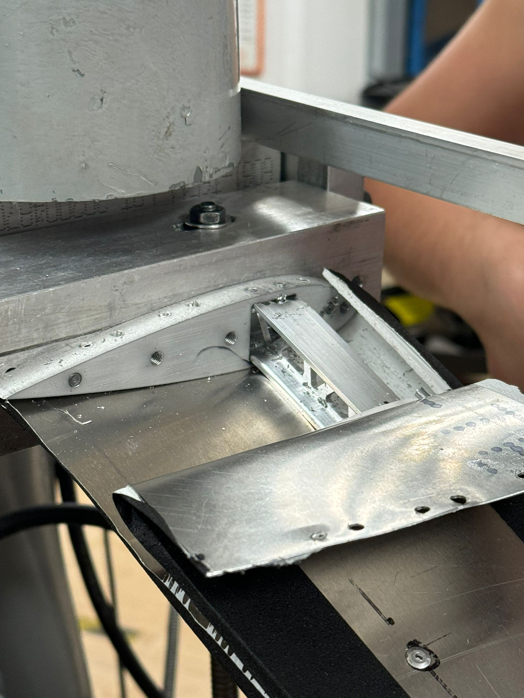
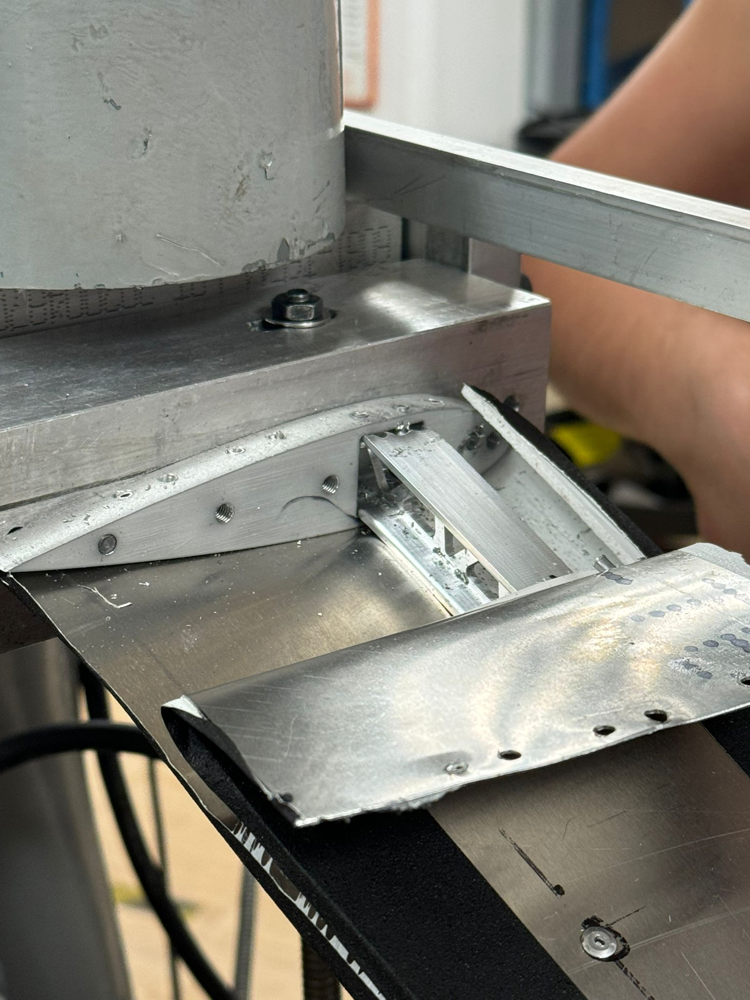

Airplane Wing
This project was a group assignment for "MAE 321: Engineering Design". The specification of the project were to design and manufacture an airplane wing that was 23.5 inches with a surface area of 98 to 102 in2 (per side) and could withstand a minimal load of 97 pounds on one end of wing. I was responsible for manufacturing the wing through the use of a lathe, milling machine, and CNC machine.

The wing was manufactured with a hollow cross section that had an aluminum 7075 I-beam running parallel to the wing axis. The I-beam was manufactured on a 3-axis CNC mill. Bulkheads, secured with rivets, allowed for the connection of the I-beam to the wing surface (curved sheet metal) to enable the distribution of induced force throughout the wing.
Analysis of the I-beam was performed to ensure that the wing could withstand the load without breaking. Analysis of the I-beam also allowed my team to identify that trusses on the interior of the beam would maximize the load that the beam could handle while also reducing the overall weight.
The airplane wing exceeded the specifications of the project was able to wistand a load greater than 97 pounds. At 150 pounds, there was breakage in the I-beam which resulted in plastic deformation. The breaking point experienced the maximum load at the same point predicted by the Creo simulation.
 
